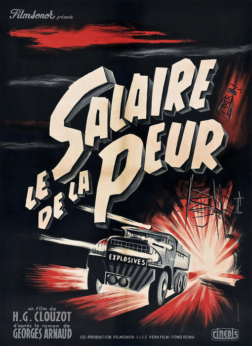
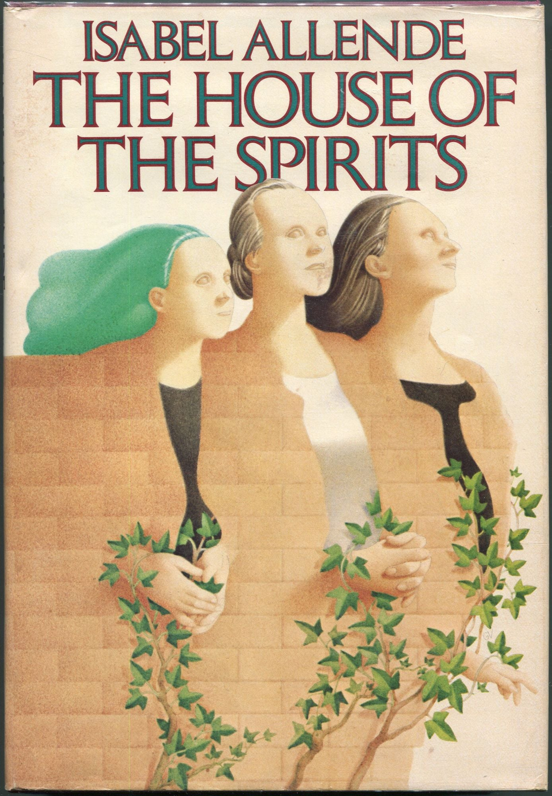

about katherine weinschenk
I spend my working hours as a Senior Technical
Writer at Modular, documenting AI infrastructure that feels like
it's evolving by the hour. It's an exciting time and place, trying to
make high-performance tools accessible to humans (and the occasional AI
agent) without losing the plot.
I'm lucky to be part of a brilliant writing community that keeps me
sharp, but I make sure to leave plenty of room to touch grass. If I'm
not writing, I'm consuming, gardening, cooking, or playing volleyball.
Sometimes vibe coding.
watch it

read it
